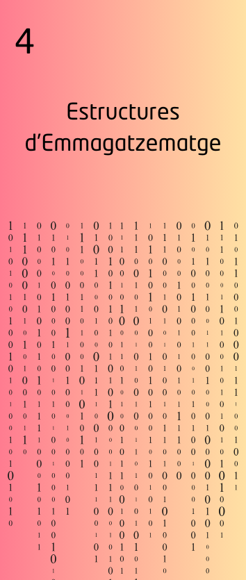

UD4: Matrius, Operacions Agregades i Expressions Regulars 🔢
Objectius de l'unitat
En aquesta unitat didàctica, ens centrarem en l’estudi de les matrius i les seves variants, com les matrius multidimensionals, per aprofundir en el tractament de dades estructurades. L'objectiu principal serà comprendre la diferència entre matrius i altres estructures de dades, com les llistes, i explorar com utilitzar-les per a emmagatzemar i manipular informació de manera eficient.
A més, introduirem les expressions regulars per tal de realitzar cercadores avançades dins de cadenes de text, millorant així la capacitat de manipular dades textuals i extreure informació útil de documents.
Finalment, explorarem operacions agregades com la filtració, reducció i recol·lecció de dades, que ens permetran realitzar operacions complexes sobre llistes, diccionaris i matrius.
Aquesta unitat proporciona les eines per treballar amb estructures de dades avançades, desenvolupant habilitats per gestionar i transformar la informació de manera eficaç en qualsevol tipus de programa.
Criteris d'Avaluació (RA6)
El Criteri d'Avaluació (RA6) que s'avaluarà durant aquesta unitat és:
RA6. Utilitza matrius, expressions regulars i operacions agregades per a la manipulació i transformació de dades.
Els criteris de realització a avaluar són:
- a) S’han creat matrius unidimensionals i multidimensionals per a emmagatzemar i manipular dades.
- b) S’han realitzat operacions bàsiques entre matrius (sumar, restar, multiplicar, dividir).
- c) S’ha reconegut la diferència entre matrius i altres estructures de dades com llistes, conjunts i diccionaris.
- d) S’han utilitzat expressions regulars per a la cerca i manipulació de cadenes de text.
- e) S’han implementat operacions agregades per filtrar, reduir i transformar dades en col·leccions.
- f) S’han utilitzat iteradors per recórrer els elements d'una llista, matriu o diccionari.
- h) S’han identificat les classes relacionades amb el tractament de documents escrits en diferents llenguatges d’intercanvi de dades.
- i) S’han realitzat programes que realitzen manipulacions sobre documents escrits en diferents llenguatges d’intercanvi de dades.
- j) S’han utilitzat operacions agregades per al maneig d’informació emmagatzemada en col·leccions.